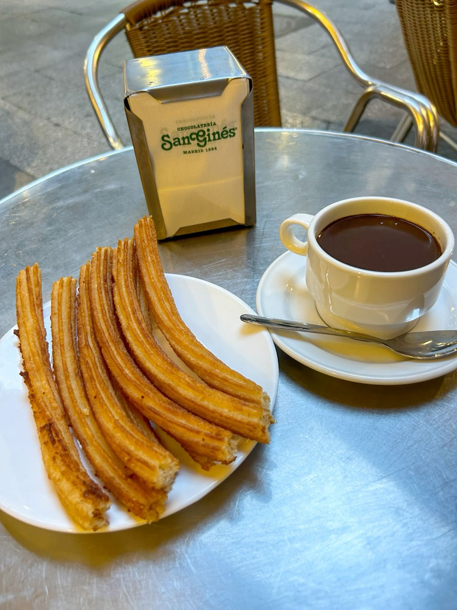
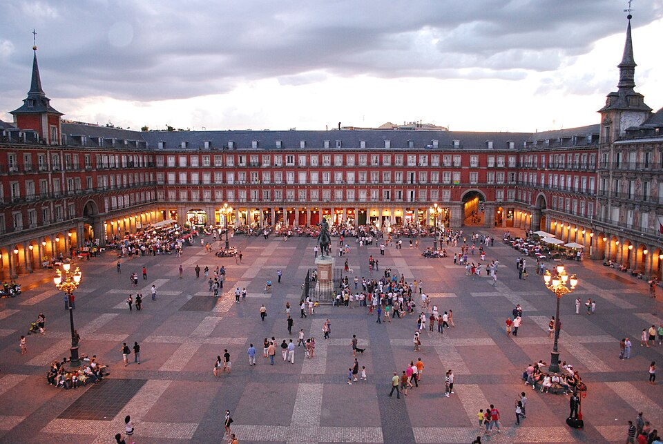
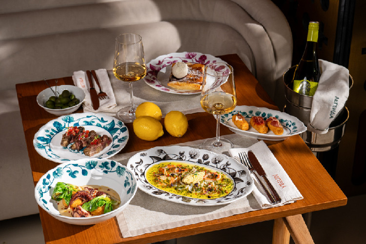
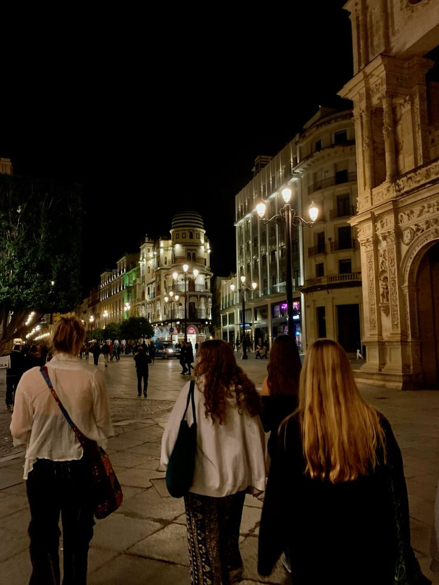
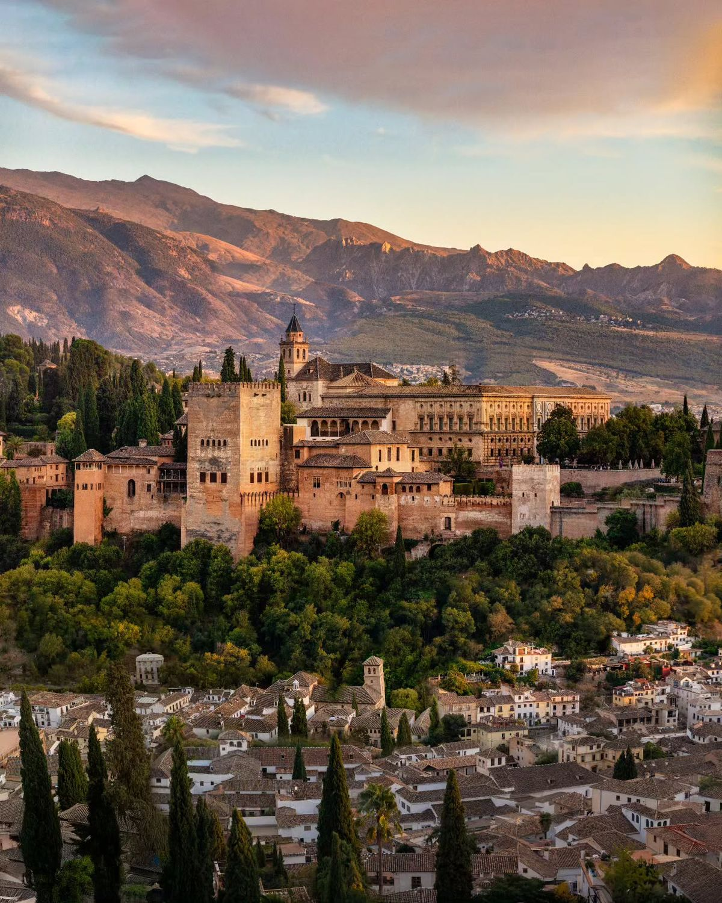
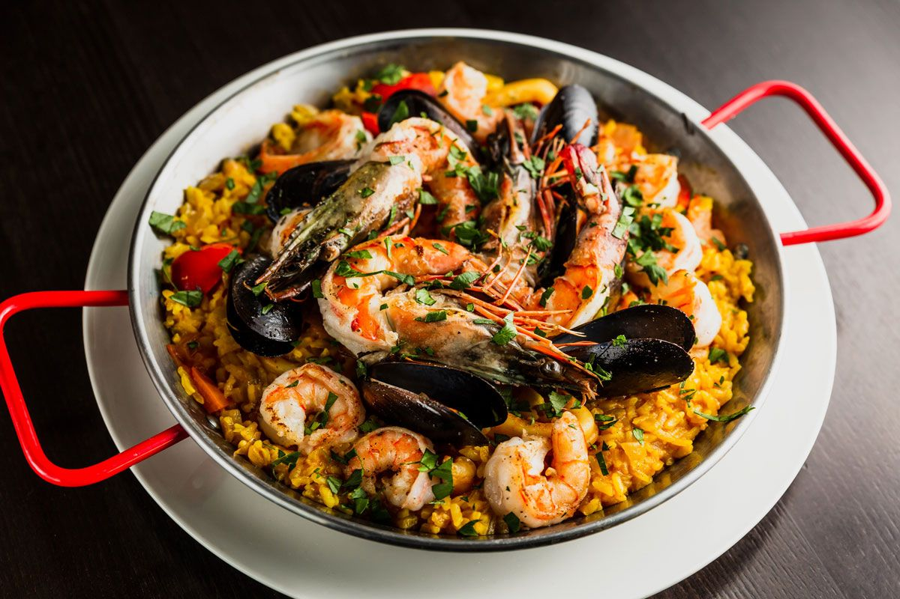
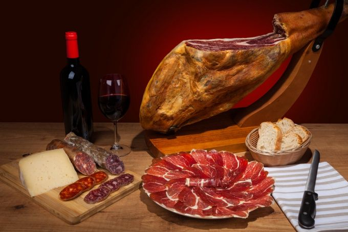
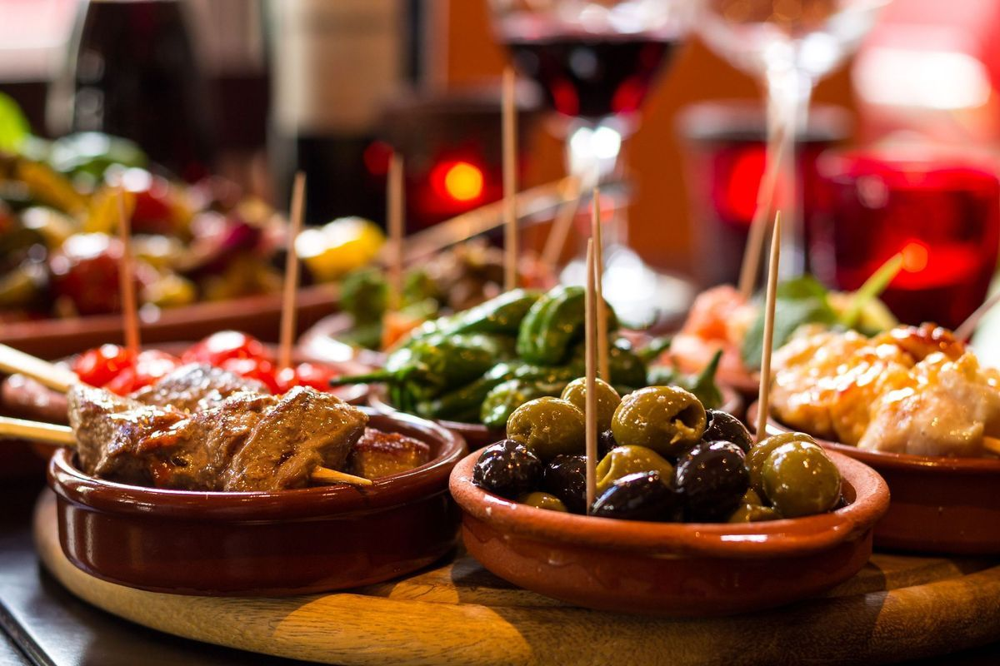
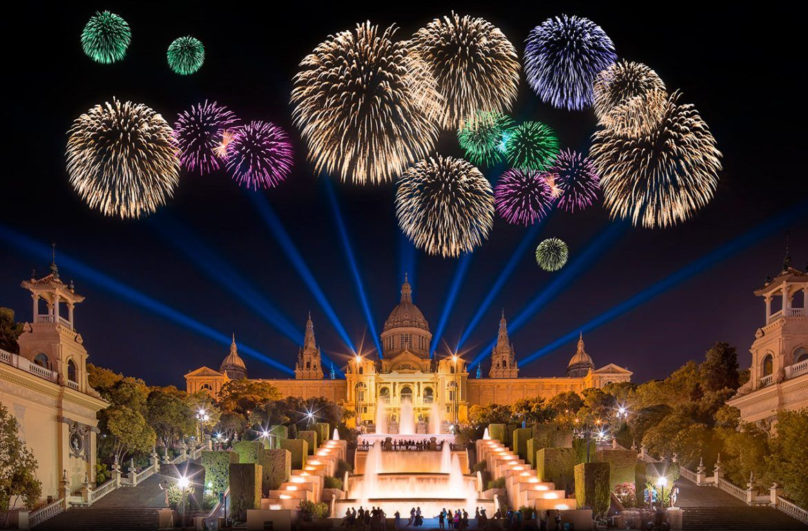

Испания
Cтрана страсти и солнца. От древних замков до современных городов — здесь история встречается с яркой культурой и неповторимой атмосферой.
Испания — страна яркого фламенко, солнечных пляжей и богатой истории. Здесь сочетаются древние города, уникальная архитектура, вкусная кухня и знаменитая футбольная культура. Разберёмся, где находится эта страна на карте, что стоит увидеть за один день, какая у неё кухня, флаг, герб и главные праздники.
Испания на карте мира

Испания — юго-запад Европы, большая часть Пиренейского полуострова
Мост между континентами: в Испании имеется своеобразный мост между Европой и Африкой, расположенный у входа в Гибралтарский пролив. От её территории до Африки — всего около 14 км.
С кем граничит Испания
Два моря и один океан вокруг Испании
Наведи курсор на карточку, чтобы узнать больше о каждом море и о окене:
Средиземное море
Омывает восточное и южное побережье Испании, включая Балеарские острова.
Кантабрийское море
Омывает северное побережье Испании, от Галисии до границы с францией.
Атлантический океан
Омывает западное и северо-западное побережье Испании, включая Галисию и Канарские острова.
Общие сведения
Площадь
505 990 км² (50-я в мире)
% водной поверхности
1,04 %
Население
48 592 909 чел. (31-е)
Плотность
96 чел./км²
Столица
Мадрид
Форма правления
Конституционная монархия
Официальный язык
Испанский
Король
Наследственная должность
Названия жителей
Испанцы
Валовой Внутренний Продукт
На душу населения
43 154 долл.
Итого
1,394 трлн
Валюта
евро(EUR)
Телефонный код
+34
Часовой пояс
UTC+1
Интерактивная карта регионов
Наведи курсор на плитку — появится столица автономного сообщества и любопытный факт о нём. Кнопки ниже подсвечивают целую группу регионов.
Наведите курсор на любую плитку карты — здесь появится столица региона и интересный факт о нём.
Один день в Испании
Представьте, что сегодня вы проснулись где-то в Испании. Как может выглядеть ваш идеальный день?

Доброе утро, Мадрид
Начните день как местные — чашкой густого горячего шоколада и хрустящими чуррос в маленьком кафе на площади.
📍 Мадрид
Прогулка по старому городу
Пройдитесь по Плаза Майор и узким улочкам исторического центра, прежде чем магазины и офисы закроются на сиесту.
📍 Плаза Майор
Время тапас
Отправляйтесь по тапас-барам с друзьями — в Испании ужин начинается поздно, а маленькие порции с бокалом вина растягиваются на весь вечер.
🍴 Тапас-бар
Ночь фламенко
Завершите день в тесном табладо Севильи, где под гитару и стук каблуков оживает древнее андалузское искусство фламенко.
📍 СевильяСамые красивые места
 Саграда Фамилия
Саграда Фамилия
Собор Антонио Гауди в Барселоне, который строится с 1882 года и до сих пор не завершён.

АльгамбраМавританский дворцовый комплекс в Гранаде — вершина исламской архитектуры в Европе.
 Мескита в Кордове
Мескита в Кордове
Бывшая мечеть с сотнями красно-белых арок, в центре которой позже построили католический собор.
 Толедо
Толедо
Город трёх культур — христианской, мусульманской и еврейской, застывший на скале над рекой Тахо.
 Канарские острова
Канарские острова
Вулканический архипелаг с самой высокой точкой Испании — вулканом Тейде.
 Плаза-де-Эспанья
Плаза-де-Эспанья
Полукруглая площадь в Севилье с каналом и мостами — одна из самых узнаваемых площадей страны.
Национальная кухня

Паэлья
Блюдо из риса с шафраном, придуманное крестьянами Валенсии — готовится в широкой плоской сковороде на открытом огне, а рецептов существует не меньше, чем семей в Испании.

Хамон
Вяленый свиной окорок, который выдерживают от года до нескольких лет — хамон иберико из свиней иберийской породы считается деликатесом мирового уровня.

Тапас
Маленькие закуски — от оливок до кальмаров и картофеля с айоли — превратились из бесплатного дополнения к напитку в целую культуру совместного застолья.
Флаг и герб Испании
Символы, за которыми стоит своя история

Rojigualda — так испанцы называют свой красно-жёлтый флаг
Что означают цвета флага
Наведи курсор на каждую полосу, чтобы узнать её значение:
Красный
По традиции символизирует кровь, пролитую в защиту страны, и отвагу народа
Жёлтый
Широкая центральная полоса ассоциируется с землёй и золотом заморских колоний
Красный
Две узкие красные полосы обрамляют жёлтую — цвета восходят к флагам королевств Кастилии и Арагона
Краткая история флага
- 1785Карлос III утверждает красно-жёлто-красный флаг как знамя военного флота Испании.
- 1843Флаг официально становится национальным флагом Испании на суше и на море.
- 1931-1939Во время Второй республики использовался трёхцветный красно-жёлто-фиолетовый флаг.
- 1981После восстановления монархии современный герб на флаге закреплён действующей Конституцией.
Герб Испании — что зашифровано в символах

Фейерверки и фиесты — неотъемлемая часть почти любого испанского праздника.
Государственные праздники
Главный праздник страны — 12 октября, Национальный день Испании (Fiesta Nacional). Отмечается в честь прибытия экспедиции Колумба в Америку в 1492 году, в Мадриде проходит военный парад.
Новый год
Año Nuevo — встречают под бой курантов, съедая по традиции 12 виноградин
День волхвов
Día de los Reyes Magos — главный день подарков для детей, важнее самого Рождества
День труда
Día del Trabajador — государственный выходной по всей стране
Успение Богородицы
Asunción de la Virgen — один из главных летних праздников
Национальный день Испании
Fiesta Nacional — годовщина открытия Америки, военный парад в Мадриде
День всех святых
Todos los Santos — испанцы навещают могилы близких
День Конституции
Día de la Constitución — в честь референдума 1978 года
Рождество
Navidad — семейный ужин, за которым следует шумный День волхвов